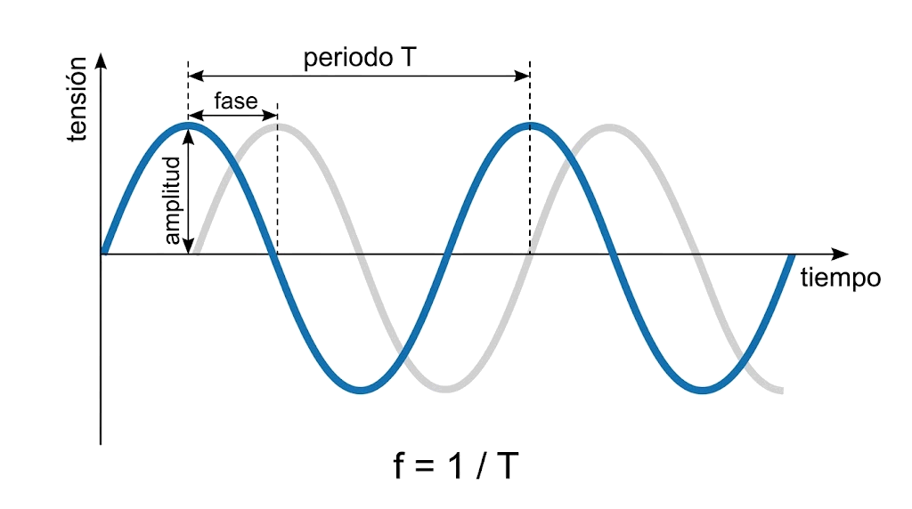
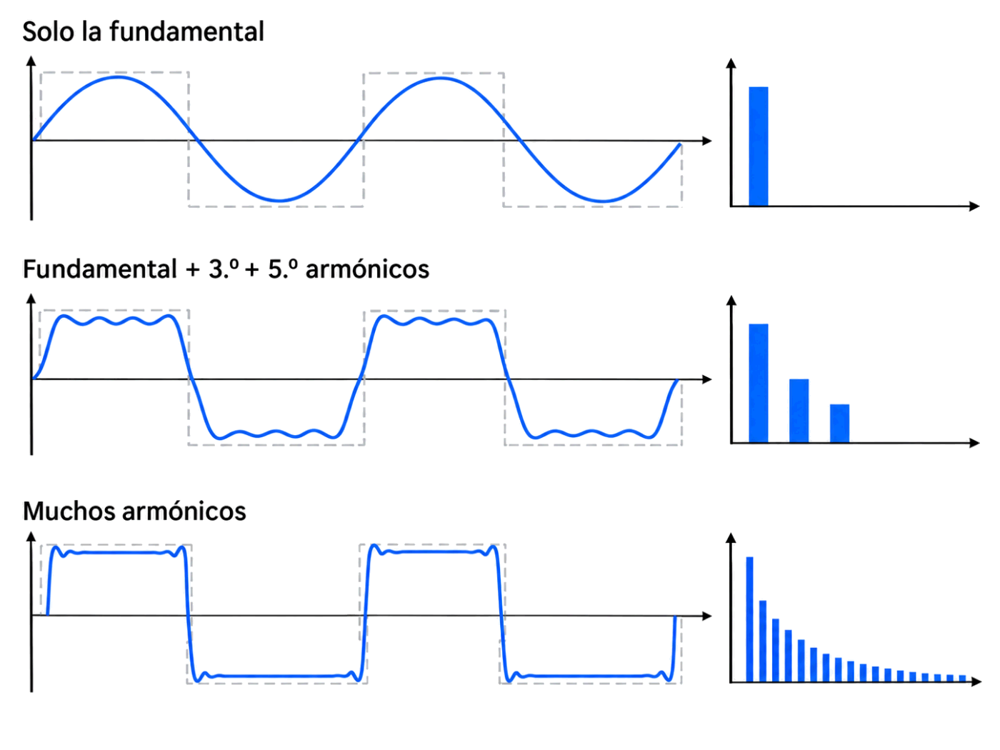
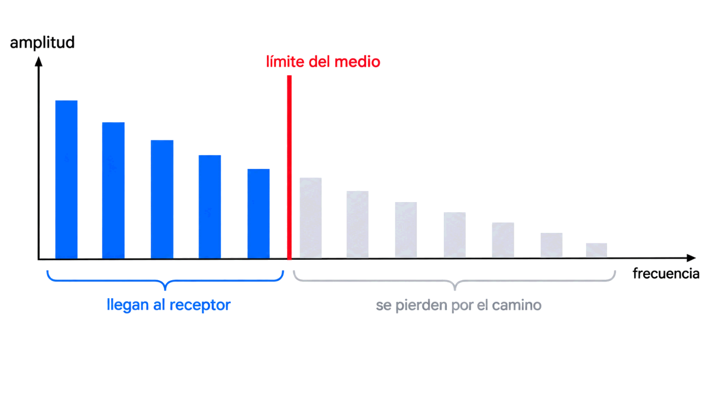

Y la primera pregunta es la más importante de todas: ¿por qué un cable tiene una velocidad máxima? Si un bit es solo «tensión alta» o «tensión baja», ¿qué impide enviarlos cada vez más deprisa?
Contenido del día
- Qué es una señal, en concreto
- Los tres parámetros: amplitud, frecuencia y fase
- Fourier: una señal cuadrada son muchas ondas
- Los dos «anchos de banda»
- Más velocidad, más frecuencias
- El medio como filtro: la tabla de la línea telefónica
- El mapa de la semana
- Resumen y errores frecuentes
- Repaso con flashcards
- Quiz del día
1. Qué es una señal, en concreto
Para que un bit viaje hay que convertirlo en algo físico que cambie con el tiempo: una tensión en un cable de cobre, una intensidad de luz en una fibra o una onda de radio en el aire. Eso que cambia es la señal.
Dentro de un ordenador el convenio es sencillo: por ejemplo, +5 V para un 1 y 0 V para un 0. Pero el libro de la asignatura avisa de algo que conviene no olvidar:
Los niveles no coinciden exactamente con los valores teóricos y las subidas y bajadas no son instantáneas. Por eso los circuitos no trabajan con valores exactos, sino con rangos: se considera un 1 cualquier tensión entre 4 y 6 V, y un 0 cualquiera entre −1 y +1 V.
Esa imperfección tiene una causa concreta, y entenderla es el objetivo de hoy. Para llegar a ella primero hay que saber describir una señal.
2. Los tres parámetros: amplitud, frecuencia y fase
La señal más sencilla que existe es la senoidal: una onda suave que sube y baja siempre igual. Se describe por completo con tres números.
| Parámetro | Qué es | Unidad |
|---|---|---|
| Amplitud | El valor máximo que alcanza la señal. Cuánto «sube» | voltios (V) |
| Frecuencia | Cuántas veces se repite la señal en un segundo | hercios (Hz) |
| Fase | Cuánto está desplazada en el tiempo respecto a un punto de referencia | grados (°) o fracción de periodo |

amplitud
▲ ← periodo T →
A ┤ ╭─╮ ╭─╮
│ ╱ ╲ ╱ ╲
0 ┼──╱─────╲───────╱─────╲──────▶ tiempo
│ ╲ ╱ ╲
−A ┤ ╰─╯ ╰─
└──┬── fase: dónde empieza respecto al origenFrecuencia y periodo
El periodo (T) es lo que dura una repetición completa. Frecuencia y periodo son inversos: si algo se repite 50 veces por segundo, cada repetición dura 1/50 de segundo.
El ejemplo del libro: una señal que se repite cada 2 segundos tiene una frecuencia de 1/2 = 0,5 Hz.
| Múltiplo | Equivale a | Un ejemplo cercano |
|---|---|---|
| 1 Hz | 1 vez por segundo | Un reloj que hace tic |
| 50 Hz | periodo de 20 ms | La corriente del enchufe en España |
| 1 kHz | 1 000 Hz | Un pitido agudo |
| 1 MHz | 1 000 000 Hz | La radio de onda media |
| 1 GHz | 109 Hz | El Wi-Fi funciona a 2,4 y 5 GHz |
La fase
Dos señales pueden tener la misma amplitud y la misma frecuencia y aun así ser distintas, porque una va adelantada respecto a la otra. Esa diferencia es la fase. Un periodo completo son 360°, así que un desplazamiento de medio periodo son 180°: donde una sube, la otra baja.
Hoy la fase parece un detalle. El miércoles no lo será: cambiar la fase es una de las tres formas de meter bits en una onda, y la que usan las redes Wi-Fi.
3. Fourier: una señal cuadrada son muchas ondas
A principios del siglo XIX el matemático francés Jean-Baptiste Fourier demostró algo que parece un truco y es la base de toda esta semana:
Cualquier señal periódica se puede construir sumando señales senoidales: una fundamental, que se repite al mismo ritmo que la señal, y una serie de armónicos, cuyas frecuencias son múltiplos exactos de la fundamental.
Aplicado a nuestros bits: una señal digital, con sus escalones bruscos, no es una onda. Es una suma de senoidales, en principio infinitas.
El caso de la onda cuadrada
Una onda cuadrada que alterna entre dos niveles tiene una receta especialmente limpia:
| Armónico | Frecuencia | Amplitud relativa |
|---|---|---|
| Fundamental (1.º) | f | 1 |
| 2.º | 2f | 0 — no existe |
| 3.º | 3f | 1/3 |
| 4.º | 4f | 0 |
| 5.º | 5f | 1/5 |
| 7.º | 7f | 1/7 |
Dos cosas que hay que retener:
- Solo tiene armónicos impares.
- Cada armónico pesa menos que el anterior. Por eso el libro dice que los que menos contribuyen a la forma de la señal son los de mayor frecuencia y menor amplitud.

Solo la fundamental: ╭──╮ ╭──╮ parece una ola, no un escalón
╯ ╰──╯ ╰──
Fundamental + 3.º + 5.º: ╭┬┬╮ ╭┬┬╮ ya se intuyen los escalones
──╯ ╰┴┴╯ ╰┴┴
Muchos armónicos: ┌──┐ ┌──┐ casi cuadrada
──┘ └────┘ └────Cuantos más armónicos se suman, más se parece a la cuadrada. Y ahora viene la idea clave: para la cuadrada perfecta harían falta infinitos. Ningún medio los deja pasar todos. Pruébalo:
4. Los dos «anchos de banda»
Aquí hay que detenerse, porque vas a encontrar la expresión ancho de banda con dos significados distintos, y las propias fuentes de la asignatura usan uno u otro según les conviene.
| Ancho de banda en hercios | Ancho de banda en bits por segundo | |
|---|---|---|
| Qué mide | El rango de frecuencias que forman una señal, o que un medio deja pasar | La cantidad de datos que pueden fluir en un tiempo determinado |
| Unidad | Hz, kHz, MHz | bps, kbps, Mbps, Gbps |
| Quién lo usa así | La física de señales, el libro de la asignatura, los fabricantes de cable | El currículo Cisco, los operadores, tú en la Semana 1 |
| Ejemplo | «Este cable admite hasta 100 MHz» | «Tengo 600 megas de fibra» |
El ancho de banda en Hz es una propiedad física del medio. El ancho de banda en bps es lo que consigues transmitir por él. Más hercios permiten más bits por segundo, y el jueves verás la fórmula exacta que los relaciona.
Cuando leas «ancho de banda», mira la unidad: es la única pista fiable de cuál de los dos significa.
El libro lo explica con una imagen muy útil: el ancho de banda de un medio es como el diámetro de una tubería. Es una característica del propio medio, no se puede cambiar desde fuera, y determina cuánto cabe por él.
5. Más velocidad, más frecuencias
Ahora junta las dos piezas. Si una señal digital es una suma de armónicos, ¿qué le pasa cuando la envías más rápido?
Cada bit dura menos, así que los pulsos son más estrechos. Y la conclusión que saca el libro de Fourier es tajante:
Para dibujar un escalón más brusco hacen falta armónicos de frecuencia más alta.
El primer armónico depende de la velocidad
Imagina que envías una y otra vez el mismo byte, 01100010. Esa secuencia de 8 bits es un
periodo completo de la señal. Si transmites a b bits por segundo, los 8 bits tardan
8/b segundos, y la fundamental es su inversa:
A 300 bps: 300 / 8 = 37,5 Hz. A 2 400 bps: 2 400 / 8 = 300 Hz.
Doblar la velocidad dobla la frecuencia de todos los armónicos. La señal entera se estira hacia arriba en el espectro.
b = 300 bps armónicos en 37,5 · 75 · 112,5 · 150 · … Hz (muy juntos, muy abajo)
b = 2 400 bps armónicos en 300 · 600 · 900 · 1 200 … Hz (ocho veces más separados)6. El medio como filtro: la tabla de la línea telefónica
Un medio deja pasar las frecuencias hasta cierto límite y corta las de arriba. Se comporta como un filtro. Así que el número de armónicos que llegan al otro extremo es simplemente:
Redondeando siempre hacia abajo: un armónico o cabe entero o no cabe.
El libro lo aplica a la red telefónica, que deja pasar unos 3 000 Hz,
enviando el byte 01100010 a velocidades cada vez mayores:
| Velocidad (bps) | Primer armónico (Hz) | Armónicos que llegan |
|---|---|---|
| 300 | 37,5 | 80 |
| 600 | 75 | 40 |
| 1 200 | 150 | 20 |
| 2 400 | 300 | 10 |
| 4 800 | 600 | 5 |
| 9 600 | 1 200 | 2 |
| 19 200 | 2 400 | 1 |
| 38 400 | 4 800 | 0 |
Compruébalo con cualquier fila: 3 000 ÷ 300 = 10. A 38 400 bps el primer armónico ya está en 4 800 Hz, por encima del límite: no llega absolutamente nada que se parezca a la señal.

amplitud
▲ │ límite del medio (3 000 Hz)
█ │
█ ▆ │
█ █ ▄ ▃ · · ← los que pasan llegan; los grises se pierden
┴─┴─┴─┴─│─┴─┴──▶ frecuencia
│Y esto responde a la pregunta con la que empezó el día:
Cuanto más rápido se transmite, más arriba están los armónicos. Llega un momento en que los que dan forma a los bits quedan por encima del límite del medio, y el receptor ya no puede distinguir un 1 de un 0.
💡 Ampliación: el medio no es la única causa
En esta explicación el medio es un filtro perfecto: deja pasar todo lo que está por debajo del límite y nada de lo que está por encima. Los medios reales son más torpes. Atenúan un poco más cada frecuencia según sube, y además retrasan unas frecuencias más que otras, lo que deforma la señal aunque todos los armónicos lleguen.
Esa deformación es la distorsión que viste en la Semana 1, y el jueves se suma al ruido.
7. El mapa de la semana
Si el medio solo deja pasar ciertas frecuencias, hay tres formas de enfrentarse a él. Cada una es un día de esta semana:
| Día | La idea | La pregunta |
|---|---|---|
| Martes | Poner los bits en el cable de forma más inteligente: codificación | ¿Se puede meter más de un bit en cada cambio de la señal? |
| Miércoles | Trasladar la señal a las frecuencias que el medio sí deja pasar: modulación | ¿Cómo se envían bits por un medio pensado para voz, o por el aire? |
| Jueves | Aceptar que hay un límite y calcularlo: ruido y capacidad | ¿Cuántos bits por segundo caben, como máximo, en un canal? |
8. Resumen y errores frecuentes
- Una senoidal se describe por amplitud, frecuencia y fase. Frecuencia y periodo son inversos: f = 1/T.
- Fourier: toda señal periódica es una suma de senoidales, una fundamental y sus armónicos.
- La onda cuadrada solo tiene armónicos impares, cada vez más débiles.
- El ancho de banda en Hz es un rango de frecuencias; en bps, una cantidad de datos. Lo primero limita lo segundo.
- Más velocidad → pulsos más estrechos → armónicos más altos.
- El medio actúa como un filtro: armónicos que llegan = ancho de banda ÷ primer armónico.
| Se dice… | …pero en realidad |
|---|---|
| «Una señal digital es una onda cuadrada, y ya está» | Es una suma de senoidales. Por eso un medio puede dejar pasar una parte y no otra |
| «El ancho de banda se mide en Mbps» | A veces. En física de señales se mide en Hz. Mira siempre la unidad |
| «Si mi cable es de 100 MHz, transmite 100 Mbps» | Hercios y bits por segundo no se convierten uno en otro con una regla fija. Depende de cómo se codifique |
| «La onda cuadrada tiene todos los armónicos» | Solo los impares |
| «Los armónicos altos son los más importantes» | Al revés: son los que menos aportan, porque tienen menos amplitud |
| «Enviar más deprisa solo exige una tarjeta más rápida» | Exige un medio que deje pasar frecuencias más altas |
| «Frecuencia y periodo son lo mismo» | Son inversos: 50 Hz son 20 ms |
9. Repaso con flashcards
Piensa la respuesta antes de girar la tarjeta.
Quiz del día
14 preguntas · 22 minutos · Contesta sin volver a la teoría
El cronómetro no corre mientras lees: arranca al llegar aquí, al pulsar «Empezar quiz» o al marcar tu primera respuesta.
Resultados
Respuestas correctas: 0 / 0
Respuestas incorrectas: 0
Vas a reproducir la tabla de la línea telefónica fila a fila y a descubrir lo que la tabla no dice: a qué velocidad el receptor empieza a equivocarse, y qué ancho de banda necesitaría para no hacerlo.
→ Ir al laboratorio del Día 1 (78 min)
Codificación: cómo se ponen los bits en el cable, qué pasa con cien ceros seguidos y por qué baudios y bits por segundo no son lo mismo.
Tarea de calentamiento (5 min): tu tarjeta Ethernet va a 1 Gbps por un cable que deja pasar unos 100 MHz. Con lo de hoy, parece imposible. ¿Qué crees que hacen para conseguirlo?